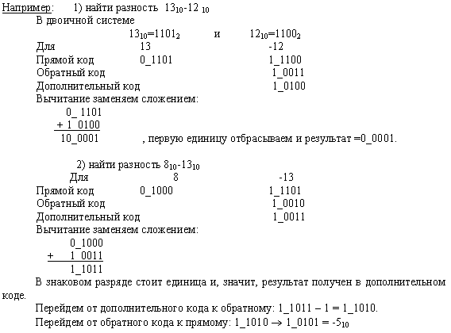

ЛЕКЦИЯ №4. (2 часа)
ТЕМА: «СИСТЕМЫ СЧИСЛЕНИЯ»
Рассматриваемые вопросы:
1. Понятие системы счисления.
2. Перевод чисел из произвольной СС в десятичную и обратно.
3. Перевод между основаниями, составляющими степень 2.
4. Арифметические основы работы ЭВМ
Литература: учебник Информатика и ИКТ» М.С. Цветкова, «Академия», 2011, стр.50-63
Ход лекции:
1.Понятие системы счисления.
Все фантастические возможности вычислительной техники (ВТ) реализуются путем создания разнообразных комбинаций сигналов высокого и низкого уровней, которые условились называть «единицами» и «нулями».
Система счисления(СС) - это система записи чисел с помощью определенного набора цифр. CС называется позиционной, если одна и та же цифра имеет различное значение, которое определяется ее местом в числе. Десятичная СС является позиционной: 999. Римская СС является непозиционной. Значение цифры Х в числе ХХІ остается неизменным при вариации ее положения в числе. Количество различных цифр, употребляемых в позиционной СС, называется основанием СС.
Развернутая форма числа - это запись, которая представляют собой сумму произведений цифр числа на значение позиций.
Например: 8527=8*103+5*102+2*101+7*100
Развернутая форма записи чисел произвольной системы счисления имеет вид
, где
X - число;
a - основа системы исчисления;
i - индекс;
m - количество разрядов числа дробной части;
n - количество разрядов числа целой части.
Например: 327.46 n=3, m=2, q=10
Если основание используемой СС больше десяти, то для цифр вводят условное обозначение со скобкой вверху или буквенное обозначение.
Например: если 10=А, а 11=В, то число 7А.5В12 можно расписать так:
7А.5В12 = В·12-2 + 5 ·2-1 +А ·120 + 7 ·121.
В шестнадцатеричной СС основа - это цифры 0,1,2,3,4,5,6,7,8,9,10,11,12,13,14,15 с соответствующими обозначениями 0,1,2,3,4,5,6,7,8,9,A,B,C,D,E,F. Примеры чисел: 17D.ECH, F12AH.
Двоичная СС- это система, в которой для записи чисел используются две цифры 0 и 1. Основанием двоичной системы счисления является число 2.
Двоичный код числа - запись этого числа в двоичной системе счисления. Например,
0=02
1=12
2=102
3=112 …
7=1112
120=11110002.
В ВТ применяют позиционные СС с недесятичным основанием: двоичную, восьмеричную, шестнадцатеричную. Для обозначения используемой СС число снабжают верхним или нижним индексом, в котором записывают основание СС. Другой способ – использование латинских букв после записи числа:
D – десятичная СС
В – двоичная СС
О – восьмеричная СС
Н – 16-ричная СС.
Несмотря на то, что 10-тичная СС имеет широкое распространение, цифровые ЭВМ строятся на двоичных элементах, т.к. реализовать элементы с 10 четко различимыми состояниями сложно. Историческое развитие ВТ сложилось таким образом, что ЭВМ строятся на базе двоичных цифровых устройств: триггеров, регистров, счетчиков, логических элементов и т.д.
16-ричная и 8-ричная СС используются при составлении программ на языке машинных кодов для более короткой и удобной записи двоичных кодов – команд, данных, адресов и операндов.
Задача перевода из одной СС в другую часто встречается при программировании, особенно, на языке Ассемблера. Например, при определении адреса ячейки памяти. Отдельные стандартные процедуры языков программирования Паскаль, Бейсик, Си, HTML требуют задания параметров в 16-ричной СС. Для непосредственного редактирования данных, записанных на жесткий диск, также необходимо умение работать с 16-ричными числами. Отыскать неисправность в ЭВМ невозможно без представлений о двоичной СС.
В таблице приведены некоторые числа, представленные в различных СС.
Двоичные числа |
Восьмеричные числа |
Десятичные числа |
Шестнадцатеричные числа |
0 |
0 |
0 |
0 |
1 |
1 |
1 |
1 |
10 |
2 |
2 |
2 |
11 |
3 |
3 |
3 |
100 |
4 |
4 |
4 |
101 |
5 |
5 |
5 |
110 |
6 |
6 |
6 |
111 |
7 |
7 |
7 |
1000 |
10 |
8 |
8 |
1001 |
11 |
9 |
9 |
1010 |
12 |
10 |
A |
1011 |
13 |
11 |
B |
1100 |
14 |
12 |
C |
1101 |
15 |
13 |
D |
1110 |
16 |
14 |
E |
1111 |
17 |
15 |
F |
2. Перевод чисел из произвольной СС в десятичную и обратно.
Перевод чисел из произвольной системы в десятичную. Для перевода числа из любой позиционной СС в десятичную необходимо использовать развернутую форму числа, заменяя, если это необходимо, буквенные обозначения соответствующими цифрами. Например:
11012=1*23+1*22+0*21+1*20=1310
17D.ECH=12·16-2 + 14·16-1 +13·160 + 7·161 + 1·162=381.921875
Перевод чисел из десятичной СС в заданную.
1) Для преобразования целых чисел десятичной системы счисления в число любой системы счисления последовательно выполняют деление нацело на основание СС, пока не получат нуль. Числа, которые возникают как остаток от деления на основание СС, представляют собой последовательную запись разрядов числа в выбранной СС от младшего разряда к старшему. Поэтому для записи самого числа остатки от деления записывают в обратном порядке.
Например:
Читая остатки от деления снизу вверх, получим 111011011.
Проверка:
1*28+1*27+1*26+0*25+1*24+1*23+0*2 2+1*21+1*20= 1+2+8+16+64+128+256=47510.
2) Для преобразования десятичных дробей десятичной СС в число любой СС последовательно выполняют умножение на основание системы счисления , пока дробная часть произведения не станет равной нулю. Полученные целые части являются разрядами числа в новой системе, и их необходимо представлять цифрами этой новой системы счисления. Целые части в дальнейшем отбрасываются.
Например: перевести число 0.375 10 в двоичную СС.
Полученный результат - 0.0112.
Необходимо отметить, что не каждое число может быть точно выражено в новой системе счисления, поэтому иногда вычисляют только требуемое количество разрядов дробной части, округляя последний разряд.
3. Перевод между основаниями, составляющими степень 2.
Для того, чтобы из восьмеричной системы счисления перевести число в двоичный код, необходимо каждую цифру этого числа представить триадой двоичных символов. Лишние нули в старших разрядах отбрасываются.
Например:
1234.7778 = 001 010 011 100.111 111 1112 = 1 010 011 100.111 111 1112
12345678 = 001 010 011 100 101 110 1112 = 1 010 011 100 101 110 1112
Обратный перевод: каждая триада двоичных цифр заменяется восьмеричной цифрой, при этом, если необходимо, число выравнивается путем дописывания нулей перед целой частью или после дробной.
Например:
11001112 = 001 100 1112 = 1478
11.10012 = 011.100 1002 = 3.448
110.01112 = 110.011 1002 = 6.348
При переводах между двоичной и шестнадцатеричной СС используются четверки цифр. При необходимости выравнивание выполняется до длины двоичного числа, кратной четырем.
Например:
1234.AB7716 = 0001 0010 0011 0100.1010 1011 0111 01112 =1 0010 0011 0100.1010 1011 0111 01112
CE456716 = 1100 1110 0100 0101 0110 01112
0.1234AA16 = 0.0001 0010 0011 0100 1010 10102
11001112 = 0110 01112 = 6716
11.10012 = 0011.10012 = 3.916
110.01110012 = 0110.0111 00102 = 65.7216
При переходе из восьмеричного счисления в шестнадцатеричное счисление и обратно используется вспомогательный двоичный код числа.
Например:
12345678 = 001 010 011 100 101 110 1112 = 0101 0011 1001 0111 01112 = 5397716
0.120348 = 0.001 010 000 011 1002 = 0.0010 1000 0011 10002 = 0.283816
120.348 = 001 010 000. 011 1002 = 0101 0000.0111 00002 = 50.716
1234.AB7716 = 0001 0010 0011 0100.1010 1011 0111 01112 =
= 001 001 000 110 100.101 010 110 111 011 1002 = 11064.5267348
CE456716 = 1100 1110 0100 0101 0110 01112 = 110 011 100 100 010 101 100 1112 = 634425478
0.1234AA16 =0.0001 0010 0011 0100 1010 10102 =0.000 100 100 011 010 010 101 0102=0.044322528
4. Арифметические основы работы ЭВМ
Правила выполнения арифметических действий над двоичными числами задаются таблицами сложения, вычитания и умножения.
Сложение |
Вычитание |
Умножение |
0+0 = 0 |
0 – 0 = 0 |
0 х 0 = 0 |
0+1 = 1 |
1 – 0 = 1 |
0 х 1 = 0 |
1+0 = 1 |
1 – 1 = 0 |
1 х 0 = 0 |
1+1 = 10 |
10 – 1 = 1 |
1 х 1 = 1 |
Например:
Правило выполнения операции сложения одинаково для всех систем счисления: если сумма складываемых цифр больше или равна основанию системы счисления, происходит перенос единицы в следующий слева разряд. При вычитании, если необходимо, делают заем. В ВТ с целью упрощения реализации арифметических операций применяют специальные коды: прямой, обратный, дополнительный. За счет этого облегчается определение знака результата операции, а операция вычитания чисел сводится к арифметическому сложению. В результате упрощаются устройства, выполняющие арифметические операции.
Прямой код складывается из знакового разряда (старшего) и собственно числа. Знаковый разряд имеет значение
0 – для положительных чисел;
1 – для отрицательных чисел.
Например: прямой код для чисел –4 и 5:
-4 410=1002 1_100
5 510=1012 0_101
Обратный код образуется из прямого кода заменой нулей - единицами, а единиц - нулями, кроме цифр знакового разряда. Для положительных чисел обратный код совпадает с прямым. Используется как промежуточное звено для получения дополнительного кода.
Например:
Прямой код 1_100 1_101
Обратный код 1_011 1_010
Дополнительный код образуется из обратного кода добавлением 1 к младшему разряду.
Например: найти дополнительный код -710
-710=1112
Прямой код 1_111
Обратный код 1_000
Дополнительный код :1_001 (1_000+1)
Правило сложения двоичных чисел:
При алгебраическом сложении двоичных чисел с использованием дополнительного кода положительные слагаемые представляют в прямом коде, а отрицательные – в дополнительном коде. Затем производят суммирование этих кодов, включая знаковые разряды, которые при этом рассматриваются как старшие разряды. При возникновении переноса из знакового разряда единицу переноса отбрасывают. В результате получают алгебраическую сумму в прямом коде, если эта сумма положительная, и в дополнительном коде, если сумма отрицательная.
